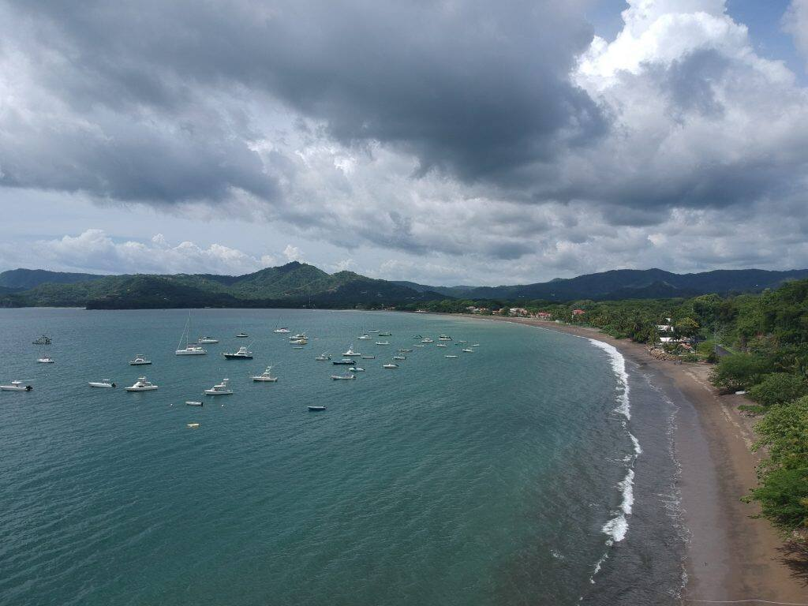

For generations the North Pacific coast of Costa Rica has stood as an icon among the world's premier fishing destinations, with a history peppered with International Game Fish Association world records.
What sets this region apart is not just the track record. It is the calm Pacific water and the underwater terrain: tranquil bays, rugged cliffs and reef, a migratory pathway and a home for marlin, sailfish, tuna and the rest of the list.
Big game, close to shore
In big game fishing, proximity is everything. Every minute spent running to the grounds is a minute without lines in. Along this coast the bays and beaches drop to over 1,000 feet of water moments from shore, because the continental shelf runs parallel to the coastline. More fishing, less commuting.

Tamarindo
The vibrant hub of the Gold Coast, revered by travel authorities and anglers alike. A deep bench of charter boats launching off the beach, and every kind of accommodation from luxury hotels to family lodges, restaurants, surf and nightlife when the lines are in.

Flamingo
Just north of Tamarindo, Flamingo's marina put Costa Rica on the international sport fishing map, and the rebuilt marina has made it a serious hub again. Close to the Catalina Islands, rich water, big-boat territory, with resorts and quiet beaches on the shore side.

Carrillo and the south
Heading south you reach Carrillo, a small bay near the tip of the peninsula that comes alive for a few months each year. There are permanent operations there, but talk to us first so you land on the right one.
Online photos can be deceiving and there is no guarantee of accuracy. Call us toll-free at 1-888-434-7491 and let us pair you with the right crew.